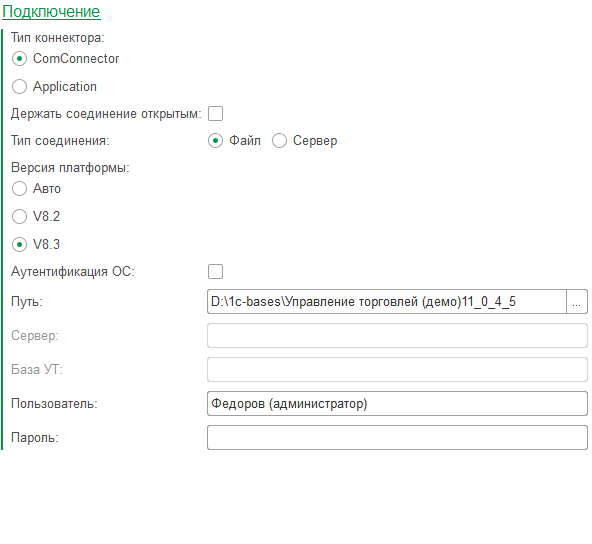

Обработка ТЕСТ ком соединения
Предназначена для тестирования возможности соединения через технологию COM и OLE
Настройки соединения

Сервер и имя базы для серверного варианта и каталог базы для файлового варианта.
А так же логин и пароль пользователя.